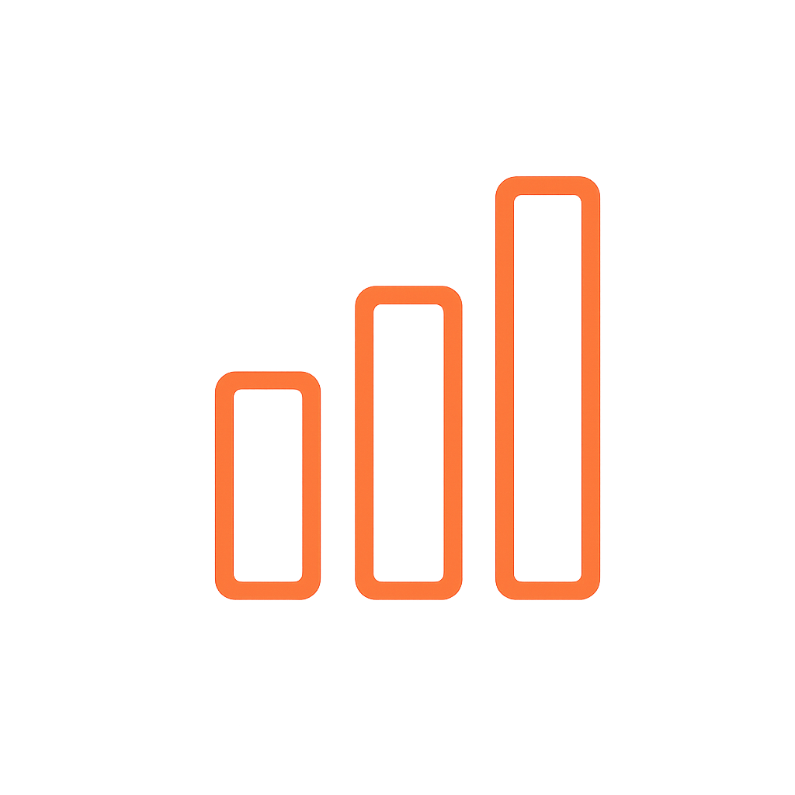
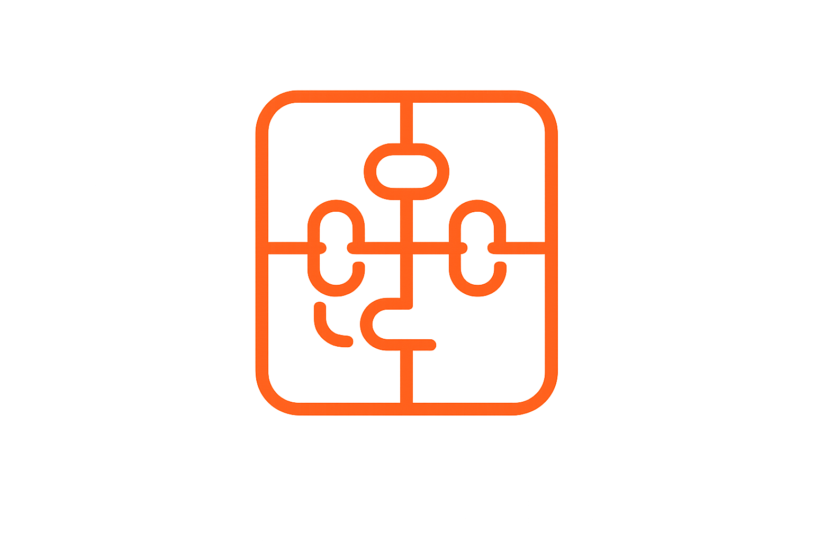

Pierdes tiempo
Tu equipo ocupa horas en tareas repetitivas que podrían automatizarse.
Somos tus socios tecnológicos Diseñamos soluciones que simplifican procesos, reducen errores y ayudan a tu empresa a tomar mejores decisiones.
Si tu negocio depende de planillas, mensajes y tareas repetitivas, probablemente estás perdiendo oportunidades sin darte cuenta
Tu equipo ocupa horas en tareas repetitivas que podrían automatizarse.
La información duplicada o desactualizada afecta tu operación y la atención de tus clientes.

Tienes datos, pero no están organizados para transformarlos en decisiones claras.
de personas desarrollan microemprendimientos en Chile.
Sin procesos financieros y administrativos claramente separados.
Muchas empresas aún tienen dificultades para incorporar tecnología.
Automatizamos procesos, ordenamos tus datos y ayudamos a que tu empresa tome mejores decisiones.
Primero entendemos cómo funciona tu empresa, detectamos los procesos que generan mayor impacto y diseñamos una solución adaptada a tu operación.
Reducimos tareas manuales, tiempos de respuesta y errores de registro.
Resultado: más tiempo productivoCreamos asistentes, flujos inteligentes y apoyo para atención y gestión.
Resultado: atención más ágilConvertimos información dispersa en indicadores claros y actualizados.
Resultado: mejores decisiones
Desarrollamos sistemas web y herramientas adaptadas al flujo de trabajo.
Resultado: una operación integradaDiseñamos, prototipamos y mejoramos soluciones técnicas y productivas.
Resultado: procesos más eficientesOptimizamos flujos de información, recursos, inventario y actividades.
Resultado: mayor control operativoUn proceso claro para implementar tecnología útil, comprensible y sostenible.
Detectamos dónde se pierde tiempo, dinero e información.
Definimos una solución útil, viable y adaptada a la operación.
Integramos automatización, datos, software o inteligencia artificial.
Capacitamos, medimos indicadores y mejoramos la solución.
En NIDA Tech trabajamos contigo desde el diagnóstico hasta la adopción. Traducimos tecnología compleja en soluciones simples para que tu equipo pueda utilizarlas de verdad.
Una solución que centraliza movimientos, clasifica gastos, entrega alertas y permite visualizar indicadores para tomar decisiones con mayor claridad.
Analizaremos tu situación, identificaremos oportunidades de mejora y te propondremos una primera solución, sin compromiso.